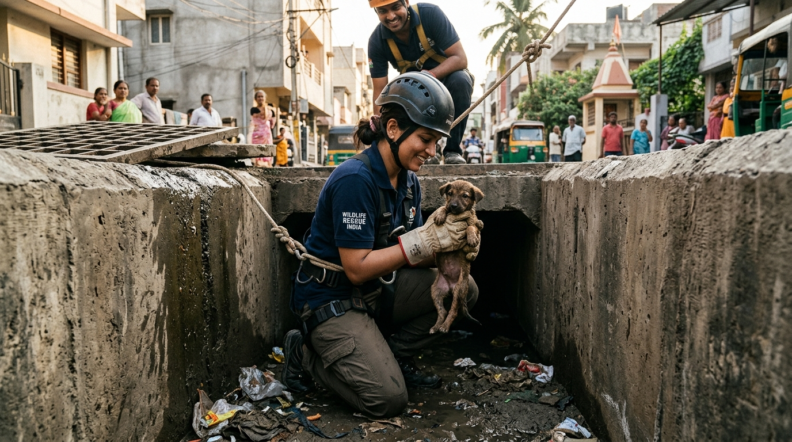

While vehicular highway collisions account for a major portion of distress alerts in Mysore, some of the most harrowing, technically demanding, and emotionally exhausting operations undertaken by Dogs Protection Trust involve confined-space extractions. In rapidly growing urban centers, unmapped stormwater drainage networks (rajakaluves), uncovered construction foundation shafts, demolition basements, and rural agricultural open wells create deadly vertical traps for innocent street animals.
When a curious puppy, an expectant mother dog, or an animal fleeing aggressive pack disputes falls down a 20-foot vertical concrete shaft, survival is measured in hours. Confined spaces rapidly accumulate noxious gases, experience sudden flash-flood surges during rains, or subject the trapped animal to hypothermia and starvation. In this masterclass guide, we detail our high-angle rope systems, confined-space atmospheric testing, and the humane extraction procedures that save lives where standard rescue vehicles cannot reach.
1. Monsoon Drainage Hazards: The Subterranean Threat
Mysore experiences heavy monsoon rainfall between June and October. Stormwater drains that remain dry during summer months become roaring torrents within 30 minutes of a cloudburst. Stray mother dogs frequently seek out dry underground culverts and concrete drain pipes as birth dens to protect their litters from human interference. When flash rains occur, these dens transform into submerged death traps.
The 4-Step Flood Rescue Workflow
- Upstream Damming & Spotters: Before a rescuer enters a drainage culvert, an upstream spotter monitors water levels. Sandbags or temporary deflectors are deployed to divert rushing water away from the trapped litter.
- Atmospheric Ventilation & Gas Detection: Decomposing sewage and organic silt in enclosed drains produce lethal hydrogen sulfide and methane gas. Portable blowers and air quality monitors ensure the pipe is safe for both rescuer and animal.
- Padded Floating Transport Bins: Rescuers navigate narrow culverts on hands and knees with thermal-lined floating waterproof carriers to secure shivering, soaking puppies without dropping them into fast-flowing currents.
- Maternal Retrieval Protocol: We never abandon the mother dog. Mother dogs will frantically bite through concrete or jump into flooding drains trying to reach their pups. Rescuers safely net the mother dog and reunite the family inside the ambulance.
2. Open Agricultural Wells: High-Angle Rappelling Operations
In the agricultural belts surrounding Mysore—including Badagalahundi, Kerkalli, and Hootagalli—farmers maintain large open irrigation wells carved out of solid granite, ranging from 20 to 50 feet deep. Stray dogs chasing small game or startled by nighttime fireworks frequently fall into these wells.
Miraculously, falling into deep water often saves dogs from fatal bone fractures, but they are left swimming in circles for hours or clinging desperately to narrow, slippery rock fissures. Hypothermia, muscular exhaustion, and drowning will claim the animal unless technical extraction is executed immediately.
Our Technical Well Extraction Setup
- Heavy-Duty Tripod Rigging: A high-strength aluminum rescue tripod is anchored securely over the wellhead with multiple static ground stakes.
- Mechanical Advantage Pulley Systems (4:1): Allows top-side rescuers to smoothly hoist a 25 kg dog and an 80 kg rescuer out of the well with zero jerky movements that could induce panic.
- Padded Full-Body Canine Rescue Slings: Once the rappeller reaches the water surface and calms the exhausted dog, the animal is strapped into an ergonomic chest-and-groin harness that prevents slipping out during vertical ascent.
- Emergency Hypothermia Revitalization: The moment the animal reaches the surface, handlers wrap the dog in heated dry towels, administer sublingual electrolytes, and place the animal under thermal heating lamps in our rescue ambulance.
3. Specialized Technical Gear Checklist
Every confined-space rescue relies on specialized gear maintained in peak condition:
| Rescue Equipment | Technical Specification | Purpose |
|---|---|---|
| Static Kernmantle Ropes | 11mm diameter, 32 kN breaking strength | Low-stretch vertical descent and heavy haul lines |
| Telescopic Catch Poles | Aircraft-grade aluminum, 360° swivel loop | Safe restraint in narrow pits without neck compression |
| Intrinsically Safe Headlamps | IP68 waterproof, 4500 lumens | Penetrating pitch-black drainage culverts & deep wells |
| Thermal Rescue Incubators | Regulated 37°C warm water circulation | Immediate revival for hypothermic newborn puppies |
4. Construction Pit Hazards & Foundation Shaft Extractions
Rapid real-estate development across Mysore's outer layouts has resulted in hundreds of unfenced foundation trenches, elevator shafts, and borewell drilling test pits. These dry, steep-sided pits act as acoustic amplifiers: sound travels upward, but an animal trapped below cannot gain enough traction on loose clay or smooth concrete to climb out.
The 3-Tier Confined-Space Protocol
- Laser Distance & Depth Telemetry: Using handheld digital rangefinders to measure precise shaft depth and determine required rope lengths before descending.
- Forced-Air Positive Ventilation: In pits exceeding 15 feet in depth, stagnant air is flushed out using portable 12V blowers to eliminate carbon monoxide pockets before human entry.
- Telescopic Gentle Containment: In narrow foundation shafts where human rappelling is impossible, rescuers lower a soft, infrared-camera-guided padded net that gently envelops the canine for vertical hoisting.
🐾 Case Study 2: Bruno's 48-Hour Survival in a 22-Foot Foundation Shaft
The Emergency: Bruno, a friendly neighborhood Indie in Bogadi 2nd Stage, chased a stray cat into an unfenced construction site at dusk and plummeted 22 feet down an uncovered concrete lift shaft.
The Rescue: Because the shaft was too narrow for a human climber, our team constructed a custom padded cradle hoist with dual stabilization guide ropes. Using an infrared borescope camera, rescuers guided Bruno onto the platform. The moment he stepped on, the automatic safety gate engaged, and Bruno was hoisted to safety within 18 minutes.
The Outcome: Bruno suffered only minor paw abrasions and mild dehydration. After receiving subcutaneous fluids and a warm meal at DPT, Bruno was reunited with his overjoyed neighborhood caretakers!
5. Case Study: The 5-Puppy Rescue from a 14-Foot Drain in Vijayanagar
🐾 Case Study 1: 45-Minute Race Against the Rain in Vijayanagar
The Emergency: During an intense evening thunderstorm in October 2023, local residents in Vijayanagar 4th Stage heard frantic puppy cries echoing from an open stormwater manhole. Water was rising rapidly at 2 inches every five minutes.
The Action: Our rescue team deployed within 15 minutes. Rescuer Manpreet donned a full-body dry-suit and climbing harness, descending 14 feet into the rushing underground culvert. Crawling 20 feet into a lateral drainage pipe, he located five 2-week-old Indie puppies huddled on a disintegrating cardboard box surrounded by water.
The Outcome: All five puppies were secured into padded floating carriers and winched to the surface. Their mother, who had been barking frantically above, was safely guided into the ambulance. Within 30 minutes, all puppies were dry, warm, nursing, and out of danger. Today, all five pups are fully vaccinated and have found permanent loving homes in Mysore!
6. Community Advocacy: Preventing Urban Traps
Rescue is critical, but prevention is permanent. We actively campaign with the Mysore City Corporation (MCC) and private builders to cover hazardous open drains and fence off construction shafts. If you spot an uncovered manhole or deep pit in your neighborhood, cover it temporarily with sturdy wooden planks or report it immediately to local authorities and DPT.
Written by Ashwini, Founder & Rescue Lead
Leading front-line high-angle rescues and lifetime shelter management at Dogs Protection Trust Mysore, dedicated to giving every trapped and injured dog a second chance.
6. Specialized Confined-Space Gear & Technical Rigging Standards
Executing high-angle extractions from 40-foot agricultural open wells in rural Mysore or narrow 3-foot diameter stormwater shafts requires specialized mountaineering-grade rescue equipment. Dogs Protection Trust utilizes custom lightweight aluminum tripod frames equipped with high-tensile steel winches, certified kernmantle rescue ropes, and multi-point canine body harnesses. Unlike makeshift ropes that can choke or injure a struggling animal, our custom padded body cradles evenly distribute the dog's weight across the sternum, ribcage, and pelvis, eliminating nerve compression during vertical ascents.
In deep drainage trenches where decaying organic matter produces dangerous concentrations of hydrogen sulfide and methane gases, rescuers wear portable multi-gas detectors and safety breathing apparatus before descending. Rescuing conscious animals in confined darkness also demands behavioral tact; our specialists carry low-frequency acoustic calming emitters and high-value food lures to safely entice terrified dogs into secure transport carriers without triggering defensive panic bites.
7. Monsoon Season Flood Extractions in Mysore's Low-Lying Stormwater Canals
Managing Cold Shock & Water Ingestion in Drowned Puppies
During the heavy monsoon downpours across Karnataka, sudden storm surges transform dry city culverts into torrential rivers within minutes. Rescued puppies extracted from flooded canals frequently suffer from acute hypothermia and secondary aspiration of muddy water into their pulmonary airways. Our on-site medical protocol immediately clears the oral and nasal cavities using gentle bulb suction, places the puppy in thermal warming blankets with insulated heating packs, and administers nebulized oxygen to prevent acute respiratory distress syndrome (ARDS).
Once stable, puppies are reunited with their mother in our climate-controlled mother-and-pup nursery unit, where warm, nutrient-dense puppy milk formulas and veterinary surveillance ensure complete pulmonary and metabolic recovery.
8. Emergency Extraction Hotline & Volunteer Rescue Spotters Network
When animals fall into open foundation ditches or drainage culverts, immediate reporting is the single most decisive factor in preventing fatal asphyxiation or drowning. Dogs Protection Trust operates a 24/7 technical extraction hotline at +91-9108021554. We encourage all Mysore residents, auto drivers, construction site supervisors, and morning walkers to save our emergency helpline number and immediately alert our rapid extraction team whenever a distressed animal is sighted.